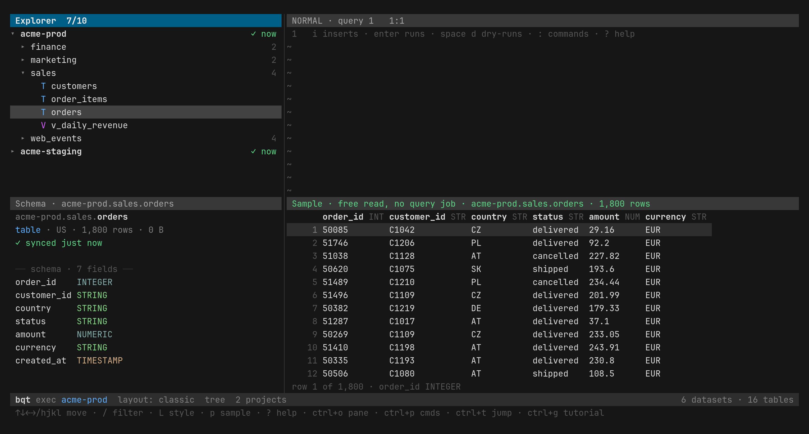
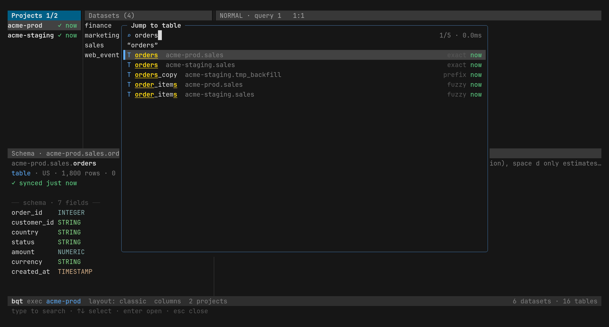
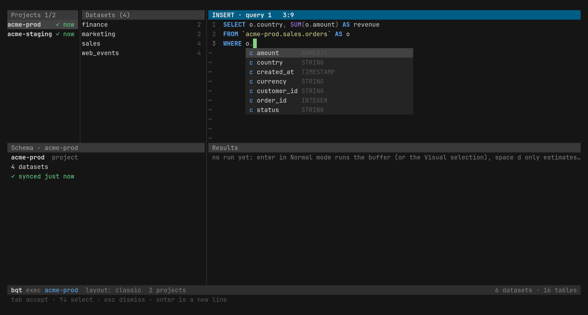
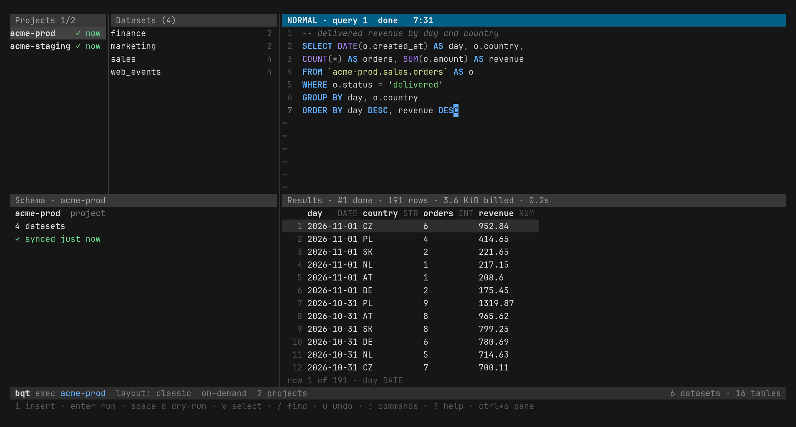

Find any table in a thousand datasets, and query it without a surprise bill.
bqt is a keyboard-driven BigQuery client for the terminal, with a safe way in for your AI agents.
go install github.com/davidsevcik/bigquery-tui/cmd/bqt@latest




Search that never waits on the API
One sync copies the metadata of your projects, datasets, tables and columns into a local SQLite index. After that, filtering the Explorer, jumping to a table and completing a column name all read local data, even across thousands of datasets.
# orders tables in prod projects, not in tmp datasets bqt search 'orders p:prod -d:tmp' # tables with a customer_id column in sales datasets bqt search 'col:customer_id d:sales'
Deselect a project and it stops syncing, but the command line and MCP can still search its cached metadata. bqt sync refreshes the catalog from a script or cron.
A cost check before every query
bqt dry-runs each query before it starts a job, and shows how many bytes it would scan.
- It asks before a statement that is not a
SELECT, and before a scan larger thanconfirm_bytes. - It sets
max_bytes_billedon the job, so BigQuery itself refuses to go over. - ctrl+d only estimates, and ctrl+c cancels a run.
Every run lands in History with its bytes billed, duration and status.
Safe for AI agents
Agents can call the commands, which print one JSON document when piped, or connect to the MCP server. Both follow one policy, checked on the dry-run before any job starts:
- Only
SELECTruns over MCP. The command line allows writes only if you turn oncli_allow_writes. - Each query is capped at 1 GiB and 60 seconds by default, and flags can only lower the limits.
- Every job is labelled
bqt=1and kept in History with its source.
bqt mcp --print-config # snippets for Claude Code, Codex and Gemini CLI
In the UI, ctrl+x y copies a table's schema, a failed query with its error, or the first rows of a result, ready to paste into an agent.
Queries you keep as plain files
History records every query you run and is searchable by status, project and age. Favorites are ordinary .sql files, so you can keep them in git. A small header adds a description, tags and typed parameters, and the file still runs as plain SQL.
-- description: Daily active users by country
-- tags: events, dau
-- param: start DATE = 2024-01-01
-- param: country STRING
SELECT ... WHERE d >= @start AND c = @country
Get started
-
Install
Download a binary from the releases page, or build it with Go 1.26 or newer.
go install github.com/davidsevcik/bigquery-tui/cmd/bqt@latest
-
Sign in
bqt uses your Application Default Credentials. You need read access to your data and permission to run jobs in one project.
gcloud auth application-default login
-
Pick your projects
Start bqt, press ctrl+x p and select the projects to sync. ctrl+g starts a short tutorial.
bqt
Every key, command and setting is in the full guide.